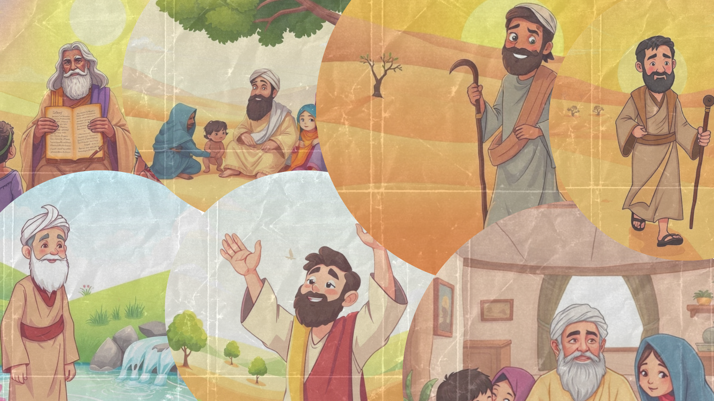

BENARA
🌙
KISAH INSPIRASI ANAK

Kisah Nabi ayyub
Chapter 1
Nabi Musa dilahirkan di masa yang sulit, tetapi Allah melindunginya dengan cara yang ajaib!
Chapter 2
Perjalanan Nabi Musa ke Madyan penuh dengan keberanian dan pertolongan Allah!
Kisah Nabi ayyub
Chapter 1
Nabi Isa memiliki kekuatan luar biasa dari Allah untuk menolong orang-orang di sekitarnya!
Chapter 2
Mukjizat Nabi Isa menunjukkan betapa kuasa Allah itu besar!
Home
Profile